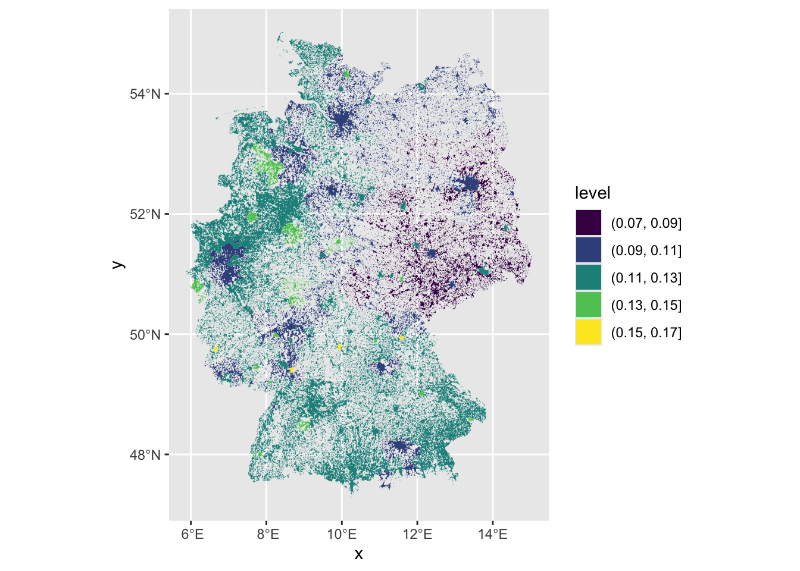
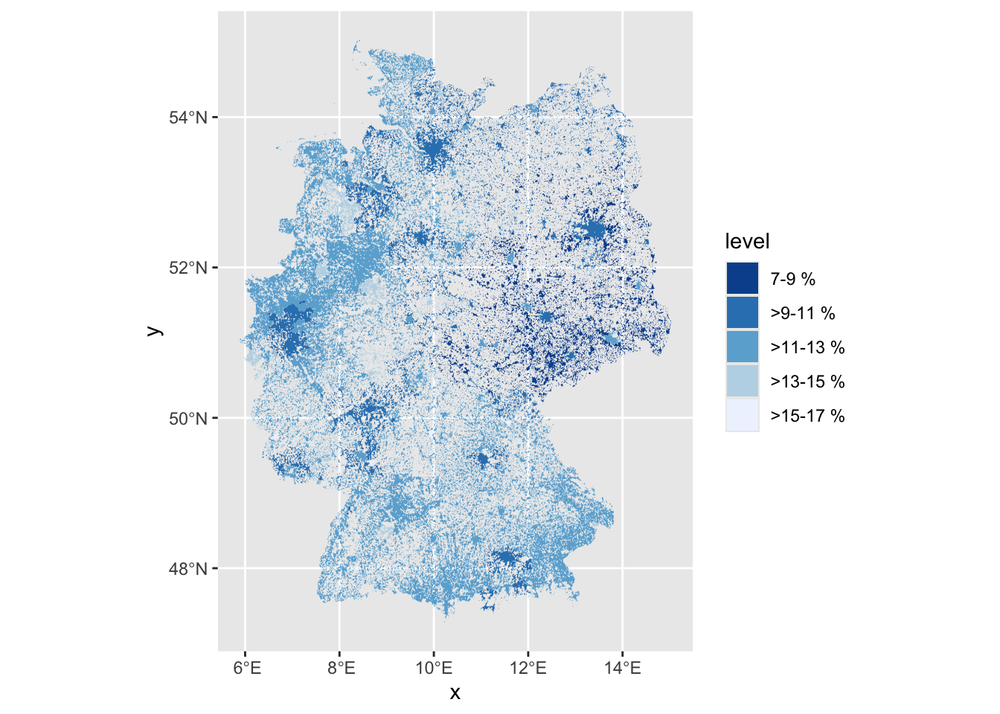
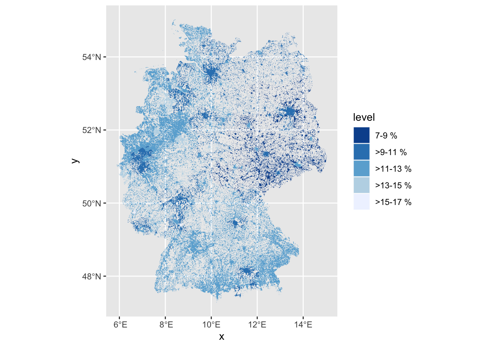
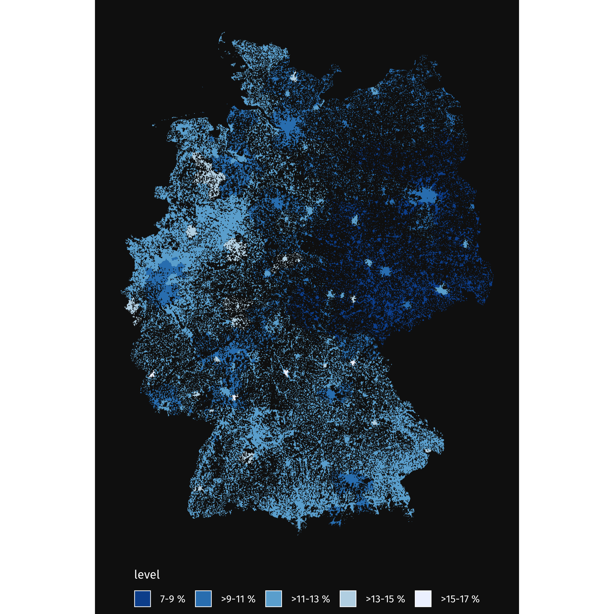
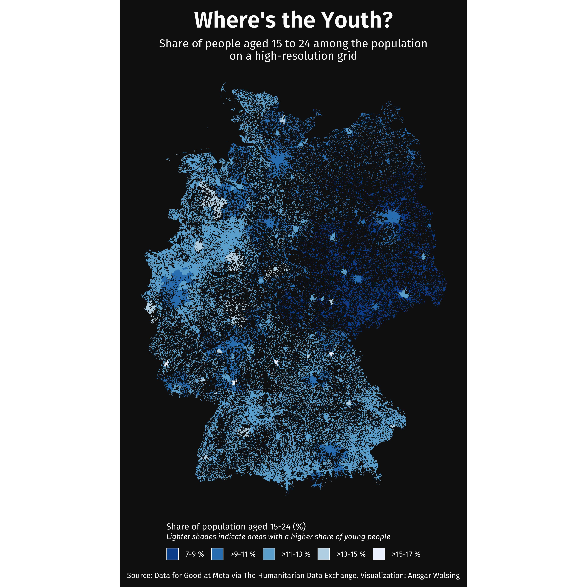

library(tidyverse)
library(terra)
library(sf)
library(ggtext)How to Create a Population Density Map in R
Introduction
This step-by-step tutorial for creating a map showing the share of youth (aged 15 to 24) in the total population of Germany using high-resolution raster data.
Loading required packages
We start the project with loading the packages we will need to make the map. If not installed yet, all packages can be installed from CRAN using install.packages("package name").
Data setup
Getting the data
The raster data required for this analysis can be manually downloaded from the Humanitarian Data Exchange. The data has originally been provided by Data for Good at Meta. Once downloaded, store the files in the data/HDX directory.
Loading the data
We start by defining the path to the data files and loading the raster data using rast function from the terra package. Each raster file contains geospatial data representing the estimated number of people living within 30 metre grid squares.
data_path <- file.path("data", "HDX")
raster_paths <- file.path(
data_path, c("population_deu_2019-07-01.tif", "DEU_youth_15_24.tif")
)
rasters <- map(raster_paths, terra::rast)
raster_crs <- terra::crs(rasters[[1]])Preparing the raster data
High-resolution raster data can be computationally intensive to process. To make the data easier to handle and analyze, we downsample it by aggregating values within a specified factor.
terra::aggregate aggregates raster values by combining smaller cells into larger ones based on the specified factor.
The downsample_raster function aggregates the raster values using a specified factor. In this case, we choose a factor of 25. With this setting, each 25x25 cell block is aggregated into one cell. You can experiment with this factor. Smaller values will retain more of the original granular data, larger values will aggregate the data into larger cells, losing some of the details.
downsample_raster <- function(raster, factor = 25) {
terra::aggregate(raster, fact = factor, fun = sum, na.rm = TRUE)
}
raster_downsampled_pop_full <- downsample_raster(rasters[[1]])
raster_downsampled_pop_group <- downsample_raster(rasters[[2]])Next, we calculate the proportion of the youth population within the total population for each cell. It’s as simple as dividing the subgroup raster by the full population raster.
raster_downsampled_combined <- raster_downsampled_pop_group / raster_downsampled_pop_fullTo visualize the raster data with ggplot2, we convert it into a data frame. We also rename the population column and replace potential NA values with 0.
raster_downsampled_combined_df <- as.data.frame(
raster_downsampled_combined, xy = TRUE
) |>
rename(population = `Population Count`) |>
mutate(population = replace_na(population, 0))Visualization
In the visualization, we will use geom_contour_filled() to aggregate the points within a certain area by their value. To create a contour plot, we define breaks and labels for the population proportions.
The breaks are calculated from the minimum to the maximum value in 2 percentage point steps. The labels are generated so that they show ranges from the lower to the upper boundary and are displayed as percentages.
contour_breaks <- seq(
floor(min(raster_downsampled_combined_df$population) * 100) / 100,
ceiling(max(raster_downsampled_combined_df$population) * 100) / 100, 0.02
)
contour_labels <- sprintf(
"%s-%s %%",
contour_breaks * 100,
c(contour_breaks[2:length(contour_breaks)] * 100, "")
)
contour_labels[2:length(contour_breaks)] <- paste0(
">", contour_labels[2:length(contour_breaks)])Creating the plot
Next, we will break down the layers of the plot step-by-step.
First, we create the basic plot with geom_contour_filled() make sure the plot aligns with the spatial reference system by applying coord_sf().
p <- raster_downsampled_combined_df |>
ggplot() +
geom_contour_filled(
aes(x, y, z = population),
breaks = contour_breaks
) +
coord_sf(crs = raster_crs)
p
Second, we add a color scale from ColorBrewer. We add the contour_labels we created before. By setting direction = -1, we change the default direction of the palette to range from dark for small to light color for large population densities.
# Add color scale with Brewer palette
p <- p + scale_fill_brewer(
labels = contour_labels, direction = -1
)
p
Third, we customize the legend adding white color around the legend items for additional contrast from the background.
p <- p + guides(fill = guide_legend(
title.position = "top",
override.aes = list(color = "white", linewidth = 0.2)
))
p
Fourth, we apply a custom theme, including the Fira Sans color which can downloaded from Google Fonts. (Note for Windows users: You can use the showtext package to register the font.)
p <- p + theme_void(base_family = "Fira Sans") +
theme(
plot.background = element_rect(color = "transparent", fill = "#121212"),
text = element_text(color = "#FCFCFC"),
legend.position = "bottom",
legend.key.width = unit(3.5, "mm"),
legend.key.height = unit(3.5, "mm"),
legend.title = element_markdown(size = 7, lineheight = 1.1),
legend.text = element_text(size = 6),
plot.margin = margin(rep(4, 4)),
plot.title = element_text(hjust = 0.5, family = "Fira Sans SemiBold", size = 18),
plot.subtitle = element_markdown(hjust = 0.5, size = 9, lineheight = 1.1),
plot.caption = element_markdown(
hjust = 0.5, size = 6, margin = margin(t = 10, b = 2))
)
p
Then, we include the title annotations.
p <- p + labs(
title = "Where's the Youth?",
subtitle = "Share of people aged 15 to 24 among the population<br>on a high-resolution grid",
caption = "Source: Data for Good at Meta via The Humanitarian Data Exchange. Visualization: Ansgar Wolsing",
fill = "Share of population aged 15-24 (%)<br><i style='font-size:6pt'>Lighter shades indicate areas with a higher share of young people</i>"
)
p
Finally, we save the plot.
ggsave("08-hdx.png", width = 5, height = 5)